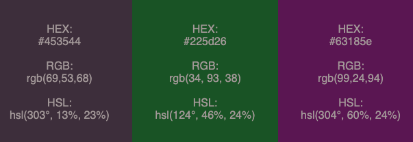

portfolio
In this section you can find a selection of my best projects, created alone or as a part of the team.
Cherry Pop
A complex digital solution for an award winning Danish start-up, Cherry Pop. My team conducted market research and prepared social media strategy, illustrations, photographs, logo, website, UI/UX for an app, campaign video and detailed technical report for the client. You can find information about our process in the included report.
Color Palette Generator
I created color palette generator. This websites allows the user to pick the base color and a color harmony, and generates slightly different color palette each time. I wrote this generator using JavaScript and applied knowledge of color theory.
Hacked Hogwarts
Hacked Hogwarts is an extended exercice in handling JSON data. Based on a JSON file provided, I created a database of fictional students, giving a user a possibility to search, sort, filter and create lists of of objects. Before writting JavaScript, I created an activity diagram and algorithms for the functions in use.
Danmarks Natur
An online campaign designed to encourage youth to become community leaders. Working with the oldest Danish NGO as a client, my team worked on online campaign including a video and website redesign.
Food Finders

Website for fictional app dedicated for students. I was responsible for coding the website based on Adobe XD prototype.
Mojito
Browser game written in JavaScript. I designed and coded the game, and created SVG assets in Adobe Illustrator. It was my first experience with JavaScript ever!

Other Projects
"QuaranTea Party" is a 1-minute video edited in Premiere Pro.